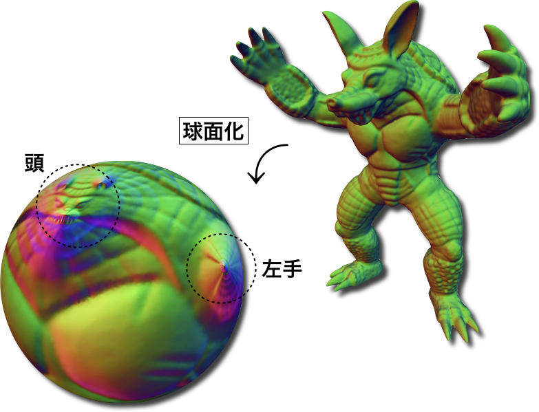
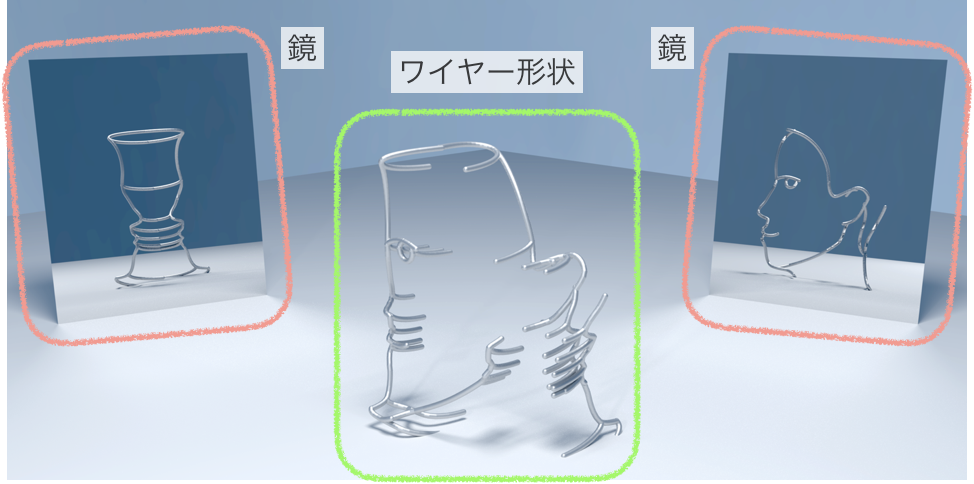

形状情報処理研究室
中央大学 理工学部 情報工学科
私たちはコンピュータと数学の力を使って，かたちを“上手”に扱う技術の研究・開発を行っています． 特に3次元形状の処理を対象にしています．そして，映像産業や製造業などにおける 実世界での課題解決に役立つことを目指しています．
私たちはコンピュータと数学の力を使って，かたちを“上手”に扱う技術の研究・開発を行っています． 特に3次元形状の処理を対象にしています．そして，映像産業や製造業などにおける 実世界での課題解決に役立つことを目指しています．
3次元形状をコンピュータ上に表現し，処理するための技術を研究しています． この分野は幾何形状処理と呼ばれ，グラフィックスや科学的可視化の基礎を支えています． これから研究テーマをいくつか紹介します．
 複雑な3次元形状を処理するのは難しいものですが，平面や球面などの簡単な形状を 処理するのは思いのほか簡単です．そこで，複雑な形状を簡単な形状に変換してから 処理するというやり方が使用されています．形状を変換するときには， できるだけ角度や面積のずれが少ない，そして裏返りのない変換を探します． 上図は三角形メッシュを球面パラメータ化した結果です．
 複数の視点から観察すると異なる形に見える立体を多義立体といいます． 2つの異なる形に見える多義立体をつくることは（実は）簡単です． ここでは，そのような多義立体の中から特別な性質を持つものを，最適化を用いて求めました． 上図のワイヤー形状は，ある特別な方向から観察するとルビンの壺に見え， 別の特別な方向から観察すると人の顔に見えます．